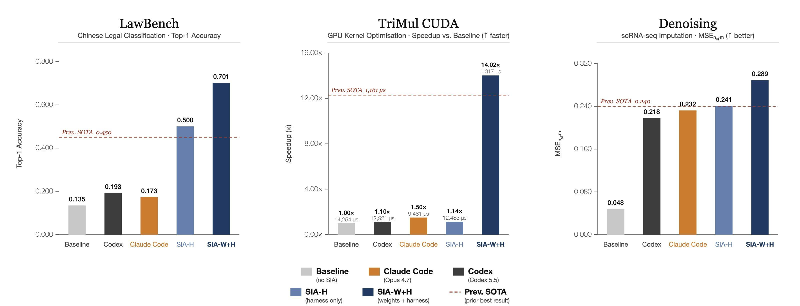
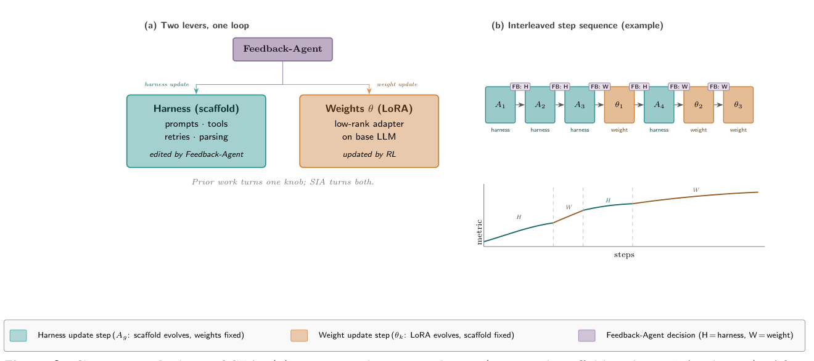
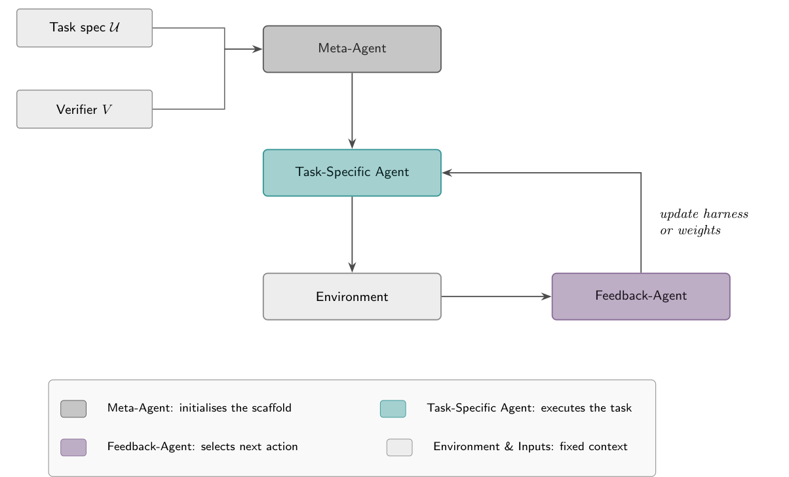
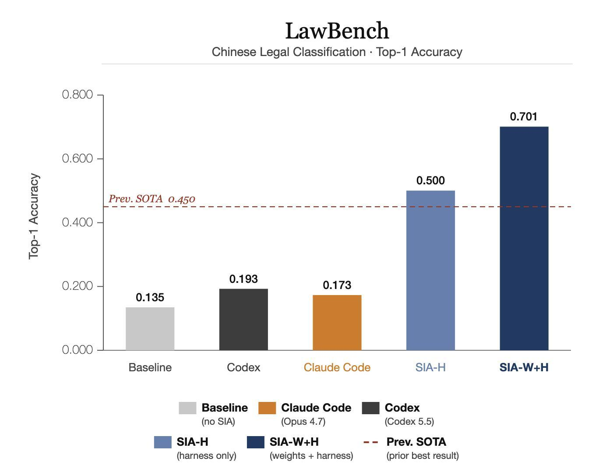
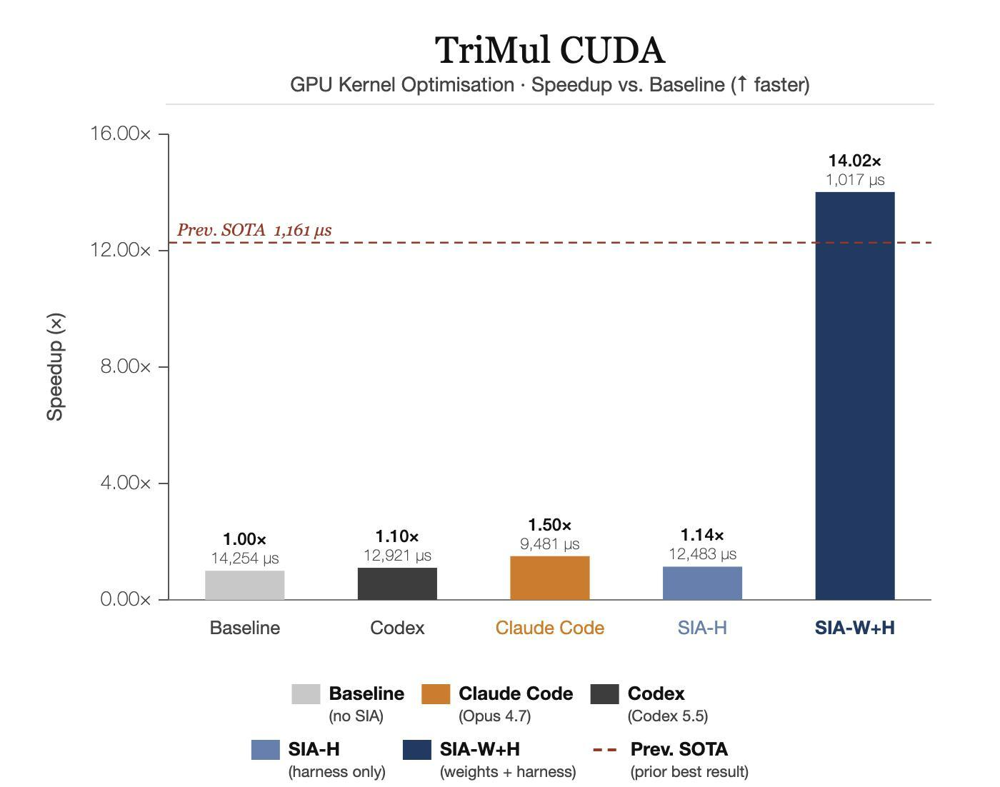
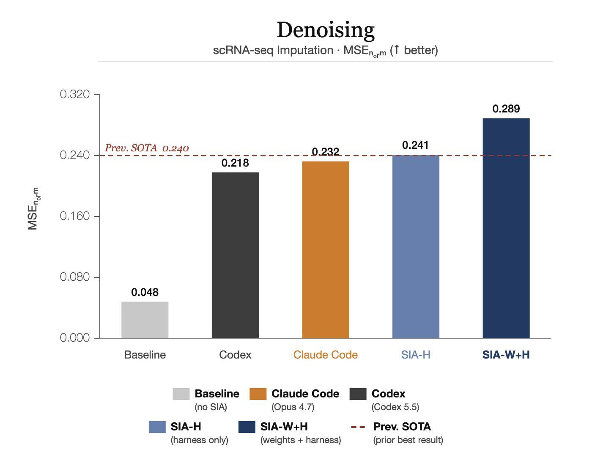

关键词（Keywords）：自改进智能体（Self-Improving Agents）、测试时训练（Test-Time Training）、强化学习（Reinforcement Learning）、支架工程（Harness Engineering）、支架生成（Scaffold Generation）
构建和改进 AI 的瓶颈在于人类。无论是模型还是包裹模型的智能体，都由人来编写、调优和纠错。让 AI 能够自行摸索出自我改进之法的长期目标仍然悬而未决。两条大体互不相通的研究线都在攻克这一瓶颈。支架更新（harness update）学派用一个元智能体（meta-agent）重写任务特定智能体的支架（scaffold，即其工具、提示词、重试逻辑与搜索流程），同时保持模型权重固定；测试时训练（test-time training）学派则使用手写的强化学习（RL）流水线，在保持支架固定的前提下，根据任务反馈更新模型自身的权重。这两个阵营相互隔离、各自为战。我们提出 SIA——一个自我改进循环：由语言模型智能体（Feedback-Agent）同时更新任务特定智能体的支架与权重。我们在三个差异显著的任务域上进行评估：中文罪名分类、底层 GPU 内核优化与单细胞 RNA 去噪。在所有三个基准上，同时动用两个杠杆（lever）的效果均优于仅迭代支架。SIA-W+H 在 LawBench 上超出此前 SOTA 25.1%，GPU 内核比此前 SOTA 快 12.4%（1,017 vs 1,161 μs），去噪任务超出此前 SOTA 20.4%。支架更新使智能体更具能动性（agentic），塑造其搜索与行动的方式；而权重更新则构建了任何提示词或支架都无法灌输的领域直觉。
当今 AI 的进展受限于人类这一速率瓶颈。模型由研究者设计并做后训练，构建于其上的智能体则由工程师搭建支架、编写提示词、调试并调优。该领域的长期目标——能够自行找出自我改进之法的 AI（模型或智能体）——仍然悬而未决。我们将本文视为迈向该目标的具体一步：一个系统，只需给定任务规格说明（task specification）与一个验证器（verifier）（二者均在 §3 中定义），即可在无需进一步人工干预的情况下同时改进其支架与模型权重。
关于自动化自我改进的研究已分化为两个大体互不相通的阵营（silo），如下所述。
阵营 1：支架/脚手架自我改进（Harness/scaffold self-improvement）。元智能体逐代重写任务特定智能体的支架——包括其系统提示词、工具调度逻辑、重试策略与答案抽取代码——同时底层语言模型的权重保持固定。近期的代表工作包括 Darwin Gödel Machine（Zhang et al., 2025）、Meta-Harness（Lee et al., 2026）、Hyperagents（Zhang et al., 2026），以及更广泛的自动化智能体系统设计研究线（Hu et al., 2024）。该阵营中反复出现的经验观察是：支架修改集中在软件工程层面的"卫生"问题——解析、重试、调度——而很少带来基础模型在任何提示词下都无法产生的领域特定推理。
阵营 2：测试时后训练（Test-time post-training）。一条手写的 RL 流水线在测试时根据任务反馈更新模型自身的权重，通常将支架固定为单一的"提示词 + 评分器"模板。代表工作包括 TTRL（Zuo et al., 2025）、Discover 测试时训练系列（Yuksekgonul et al., 2026），以及 TTT 惊人有效性结果（Akyürek et al., 2024）。此处的收益来自内部策略的变更，但带来这一收益的流水线本身由人类设计，且不会适应一个带支架的智能体所暴露出的任务结构。
缺口（The gap）。这两个阵营相互隔离、各自为战。支架方向的工作使模型保持固定；测试时训练则使支架保持固定。
§2 陈述本文回答的研究问题，并将每个问题映射到后续章节。§3 界定技术词汇。§4 将 SIA 置于自我改进与测试时训练工作的版图中。§5 描述可配置循环（configurable-loop）方法。§6 给出各任务的实验结果与消融。§7 讨论每个杠杆各自改变了什么。§8 与 §9 以局限性与未来工作收尾。

本文围绕两个研究问题展开，每个问题都由后文特定章节回答。
任务特定智能体（task-specific agent）是一个接收任务实例并产出答案的程序。我们将其分解为以下部分：
openai/gpt-oss-120b 作为基础模型。我们全程将智能体中固定不变、非权重的组成部分称为支架（scaffold，亦作 harness）。它是系统提示词、工具调度逻辑、答案抽取以及任何支撑性基础设施的并集——即智能体中所有固定代码而非模型输出的部分。
元智能体（meta-agent）是一种 LLM 调用，其输出本身就是一个智能体。SIA 使用两个元智能体：
A1 = M(U, R)Ag+1 = F(Ag, τg, Eg, U)任务特定智能体即第 g 代中实际对评估数据集执行任务的支架 Ag。
与仅依据聚合指标进行改进的系统不同，F 接收完整的轨迹 τg——即 Ag 在 D（评估数据集）上运行所得到的完整结构化执行日志：每个任务实例的每条提示词、模型响应、工具调用、工具结果与抽取答案。这使得 F 能够诊断具体的失败模式，而不是对汇总统计量做出反应。
每一代 g 都遵循三阶段协议：
| 符号（Symbol） | 含义（Meaning） |
|---|---|
g | 世代索引（Generation index） |
Gmax | 最大世代数（Maximum number of generations） |
Ag | 第 g 代的智能体支架（Agent scaffold at generation g） |
D | 评估数据集（Evaluation dataset） |
U | 任务规格说明（基准描述 + 示例实例）（Task specification (benchmark description + sample instances)） |
Eg | 第 g 代的性能指标与错误日志（Performance metrics and error logs at generation g） |
τg | 第 g 代的执行轨迹（Execution trajectory at generation g） |
F | 反馈智能体（Feedback agent） |
G | RL 训练期间每个状态的采样（rollout）次数（Number of rollouts per state during RL training） |
πθ | 当前策略（具有可训练权重 θ 的模型）（Current policy (model with trainable weights θ)） |
πθ0 | 冻结的参考策略（基础模型）（Frozen reference policy (base model)） |
s | 初始状态（任务提示词）（Initial state (task prompt)） |
a | 动作（模型生成的响应 / 采样结果）（Action (model-generated response / rollout)） |
V(s, a) | 给定状态 s 下动作 a 的任务奖励（Task reward for action a given state s） |
我们分别综述两条研究路线（silo），刻画 SIA 所针对的具体空白，并在一张对比表中总结整体格局。
在所有训练运行中，我们使用 gpt-oss-120b 搭配 LoRA 秩 32（LoRA rank 32）作为基础模型（base model）与适配器配置。权重更新在 H100 GPU 上通过 Modal（我们的 RL 训练平台）执行，该平台在单个托管流水线内处理 rollout 生成、奖励分配与梯度更新。SIA 建立在现有训练框架之上；Feedback-Agent 在其控制下组合这些基础设施组件，将权重更新视为与脚手架重写（scaffold rewriting）并列的两个可选动作之一。相关基础设施包括：用于灵活 RLHF 的 verl/HybridFlow（Sheng et al., 2024）、用于长时程智能体训练的 SkyRL（Cao et al., 2025）、用于统一后训练的 LLaMA-Factory（Zheng et al., 2024），以及用于精简微调配置的 Axolotl。
| 系统（Agent） | 修改脚手架（Edits harness） | 修改模型权重（Edits weights） |
|---|---|---|
| SIA（本文） | 是 | 是 |
| Hyperagents（Zhang et al., 2026） | 是 | 否 |
| Darwin Gödel Machine（Zhang et al., 2025） | 是 | 否 |
| Meta-Harness（Lee et al., 2026） | 是 | 否 |
| AI Scientist（Lu et al., 2024） | 部分 | 否 |
| Automated agentic system design（Hu et al., 2024） | 是 | 否 |
| AutoResearcher（Karpathy, 2026） | 否 | 否 |
| TTRL（Zuo et al., 2025） | 否 | 是 |
| Discover-TTT（Yuksekgonul et al., 2026; Akyürek et al., 2024） | 否 | 是 |
| EUREKA（Ma et al., 2023） | 部分 | 是 |
| FunSearch（Romera-Paredes et al., 2024） | 部分 | 否 |
| Voyager（Wang et al., 2023） | 是 | 否 |
| Self-Refine（Madaan et al., 2023）/ Reflexion（Shinn et al., 2023） | 部分 | 否 |
| STaR（Zelikman et al., 2022） | 否 | 是 |
| ReAct（Yao et al., 2022） | 否 | 否 |
据我们所知，SIA 是唯一在单一自我改进循环中同时更新脚手架与权重的系统。
SIA 是一个由三个 LLM 组件驱动的可配置循环：Meta-Agent、Task-Specific Agent 和 Feedback-Agent。Meta-Agent 初始化任务专用智能体的脚手架（scaffold）。每次执行后，Feedback-Agent 观察轨迹（trajectory）与性能，然后在每一步动态地在两个互补动作之间二选一：harness 更新（脚手架演化，权重固定）或训练算法更新（由 Feedback-Agent 选定 RL 方法进行权重更新，脚手架固定）。动作的选择，以及在选择权重更新时对训练算法的选择，均以任务类型与观测到的奖励动态为条件。Harness Update Phase（脚手架更新阶段）与 Weight Update Phase（权重更新阶段）是这两种动作类型的软标签（soft labels），而非刻板的顺序阶段。


SIA 的三个组件（Meta-Agent、Task-Specific Agent、Feedback-Agent）在 §3.2 中定义；实现细节如下。在所有实验中，Meta-Agent 与 Feedback-Agent 使用 Claude Sonnet 4.6；任务专用智能体使用 gpt-oss-120b（脚手架步骤）或经 RL 适配的检查点（训练步骤）。
当 Feedback-Agent 选择一次脚手架更新时，循环运行一步脚手架演化。每一步都遵循逐步协议（执行 → 分析 → 改进）。rollout 由当前模型 πθ（基础模型或经 RL 适配的模型）产生；在此步骤中模型权重 θ 保持固定，只有脚手架 Ag 发生变化。递推关系（recurrence）为：
Ag+1 = F(Ag, τg(πθ), Eg, U)
其中 τg(πθ) 表示使用模型 πθ 执行脚手架 Ag 所收集的轨迹。
示例任务正则化（Sample-task regularisation）。在脚手架生成期间，Meta-Agent 以多样化的任务规范集合为条件，这有助于缓解初始脚手架对单个基准测试实例的过拟合。
我们在横跨法律、系统与生物学的三个对比性任务上评估 SIA。这些基准常被用于评估其他自我改进 AI 系统；我们特意在其上运行，以便与先前工作直接对比。
| 任务（Task） | 领域（Domain） | 训练 / 测试（Train / Test） | 指标（Metric） | 先前 SOTA（Previous SOTA） | 验证器（Verifier） |
|---|---|---|---|---|---|
| LawBench（191 类） | 中文法律 | 5,332 / 913 | top-1 准确率 | 0.450 | 留出测试划分判分器（held-out test-split grader） |
| AlphaEvolve TriMul | 底层（low-level） | 无 / 固定输入形状 | score = 1500/runtime（越高越快） |
1.292 | H100 计时 |
| MAGIC scRNA-seq 去噪 | 单细胞 | 无 / 胰腺 scRNA-seq | MSE 归一化（∈[0,1]，越高越好） |
0.24 | 对照真实值的 MAGIC 参考（MAGIC reference against ground truth） |
所有权重更新步骤均通过 LoRA（秩 r=32，学习率 4×10−5）适配 gpt-oss-120b。
由于脚手架更新步骤从由 Meta-Agent 初始化的、围绕 gpt-oss-120b 的脚手架出发，并与我们报告所用相同的验证器对抗运行，因此按构造方式（by construction），初始分数即为经 Meta-Agent 初始脚手架 A1 过滤后的 gpt-oss-120b（一个任务专用系统提示词、单工具调度循环，以及在任何 Feedback-Agent 迭代开始前根据基准规范一次性生成的输出解析器）。随后，脚手架更新轨迹刻画脚手架迭代在该基线之上新增的内容，而权重更新轨迹刻画权重更新在仅脚手架（harness-only）最优之上新增的内容。我们将此视为主要基线结构。
在所有任务中，Feedback-Agent（我们的方法）从脚手架迭代（scaffold iteration）开始，一旦脚手架（harness）进展陷入停滞便切换至权重更新；我们报告 SIA-H（仅脚手架的最佳结果）和 SIA-W+H（脚手架 + 权重更新的最佳结果），以隔离每个机制（lever）各自的贡献。
LawBench(Fei et al., 2023)是一个多类别法律文档分类基准，取材于真实的中文刑事案情描述。给定一份事实案情摘要，模型必须从中国成文法（statutory law）中的 191 个不同类别中识别出正确的罪名。这 191 个类别编码了精细的法律区分，即便是训练有素的从业者也会觉得颇具难度：盗窃类（普通盗窃、公共财产盗窃、侵占）、人身伤害类（普通伤害、加重伤害、重伤）以及各类欺诈变体，彼此之间在法律上精确的事实要件各不相同，且直接影响量刑结果。随机猜测基线（random-guess baseline）的正确率不足百分之一。该基准包含 5,332 个训练样本和 913 个测试样本；所有评估均在留出的测试集（held-out test split）上进行。
脚手架更新（Harness updates）。早期脚手架迭代建立了一条可用的分类流水线；后续几代将其重构为 TF-IDF + LinearSVC 流水线，迭代调优字符 n-gram 范围与正则化参数 C，准确率稳步提升，直至增益在 50.0% 处趋于平稳——较最初运行提升了 36.5 个百分点。此时，Feedback-Agent 检测到奖励停滞，遂切换至权重更新。
权重更新（Weight updates）。由于奖励信号是一个干净的、基于结果的标量（罪名是否正确），并且 rollout——每次 rollout 都是针对测试集执行的一个生成的解决方案脚本——可以低成本地并行生成，Feedback-Agent 采用了带 GAE 的 PPO：学习得到的状态价值头（value head）Vφ 对生成的解决方案脚本产生逐 token 的优势估计（advantage estimate），而裁剪替代目标 min(r̂tÂt, clip(rt, 1±ε)Ât) 则防止策略偏离一个可用的基线过远。这为模型编写能正确处理细粒度罪名区分的分类代码的能力施加了稳定的梯度压力，将准确率推升至 70.1%，较仅脚手架的最佳结果再提升 20.1 个百分点（图 4）。

三角乘性更新（triangular multiplicative update，TriMul）是 AlphaFold2 的 Evoformer 模块中的核心运算，用于在蛋白质结构预测过程中传播成对残基相互作用特征。该任务取自 AlphaEvolve 基准，要求智能体在 H100 GPU 上为这一运算编写自定义 CUDA 内核。TriMul 受内存带宽限制而非计算限制：由于三角稀疏结构，线程访问非连续内存，引发 warp 分歧（warp divergence）与缓存未命中，使得标准稠密矩阵优化技术失效。要实现高吞吐，需要 H100 专属知识——张量核心调度（tensor core scheduling）、共享内存分块（shared-memory tiling）、寄存器压力管理——而这些是标准库（cuBLAS、cuSPARSE）无法应用于此运算的。得分定义为 1500/运行时间（runtime），因此得分越高意味着内核越快。
脚手架更新（Harness updates）。智能体在多次迭代中逐步构建并完善可用的 CUDA 内核，最终收敛到最佳运行时间 12,483 µs，即 1.14× 加速。增量式的脚手架改动（内存布局提示、编译标志、重试逻辑）持续带来较小的增益，直至轨迹趋于平稳，此时 Feedback-Agent 切换至权重更新。
权重更新（Weight updates）。内核优化具有稀疏、结果主导（outcome-heavy）的奖励结构：大多数生成的内核要么编译失败，要么远非最优，这使得冷启动（cold start）下的原始梯度信号缺乏信息量。Feedback-Agent 采用了熵优势加权（entropic advantage weighting），通过带自适应温度 β 的 softmax 重分配——wi ∝ exp(ri/β)——提高高奖励 rollout 的权重、压低接近零奖励的噪声，从而即使在 rollout 批次中大多数内核都很差时也能产生有效的梯度流。这使得模型能够内化 H100 专属的设计模式——共享内存分块、fp32 寄存器累加、块大小选择——这些是任何脚手架编辑都无法编码的，将运行时间降至 1,017 µs，最终加速 14.02×，较仅脚手架的最高水平降低了 91.9%（图 5）。

单细胞 RNA 测序（scRNA-seq）测量数千个单细胞的基因表达，但得到的计数矩阵高度稀疏：由于技术性丢失（technical dropout），许多真实的非零计数被观测为零。MAGIC（基于马尔可夫亲和图的细胞插补，Markov Affinity-based Graph Imputation of Cells）通过在细胞间构建 k 近邻图、计算马尔可夫转移概率，并将表达值在图邻居间扩散来插补缺失信号。该任务要求智能体在胰腺 scRNA-seq 数据(Baron et al., 2016)上调优 MAGIC 的耦合超参数——邻居数量 k、扩散步数 t、核带宽（kernel bandwidth）α——以及预处理选择。该优化并不平凡：k 过小会过拟合单个细胞的噪声；过大则导致过度平滑，破坏真实的生物学信号。评估使用 mse norm，即相对于真值（ground truth）的归一化重建质量得分（越高越好；1.0 表示完美插补）。
脚手架更新（Harness updates）。智能体在多次迭代中扫描了 MAGIC 的耦合超参数空间——邻居数 k、扩散步数 t、带宽 α——并达到稳定平台期，mse norm 稳定在最佳值 0.241。进一步的脚手架迭代未能产生有意义的改进，促使 Feedback-Agent 切换至权重更新。
权重更新（Weight updates）。借助 GRPO，模型完全超越了参数调优的范畴。关键在于，第一个权重更新检查点引入了一项结构性变换，而仅脚手架的循环在全部脚手架迭代中从未生成过它：一个两行的后处理步骤（np.clip + np.rint），将插补后的计数取整为非负整数，从而强制满足一个生物学不变式——该不变式显而易见地正确，却在此前任何版本的脚手架中都缺失。这把 mse norm 提升至 0.289，较仅脚手架的最佳结果提升 20%（图 6）。

为隔离每个机制（lever）各自的贡献，我们对 SIA-H（仅脚手架更新）与 SIA-W+H（脚手架 + 权重更新）进行消融（ablate）对比。表 3 报告了全部三个任务上的初始得分、此前的最先进水平（prior SOTA）以及两个运行点（operating point）。
| 任务（Task） | 初始（Initial） | 此前 SOTA（Prev. SOTA） | SIA-H（仅脚手架） | SIA-W+H（脚手架 + 权重） |
|---|---|---|---|---|
| LawBench（top-1 准确率） | 13.5% | 45.0% | 50.0% | 70.1% |
| AlphaEvolve TriMul（奖励） | 0.105 | 1.292 | 0.120 | 1.475 |
| 去噪（mse norm） | 0.048 | 0.240 | 0.241 | 0.289 |
SIA-W+H 在每项任务上都严格优于 SIA-H，从而证实了 RQ1。增益十分可观：LawBench 上 +20.1 个百分点，TriMul 上运行时间降低 91.9%（12,483 → 1,017 µs），去噪上提升 20%。每个机制占据不同的变更空间——外部脚手架与内部参数——因此两者都不会使对方可获得的增益饱和（参见 §7.2–7.4）。
脚手架迭代产生外部化（externalised）的变更——新工具、更严谨的解析器、搜索过程、重试策略和提示词（prompt）结构——而模型权重保持不变。
在全部三个任务中，可以观察到 Feedback-Agent 构建日益专业化的脚手架：在 LawBench 上，是一个结构化的答案提取层，以及一个对模型 top 候选进行重排序的 SVC 重排序器；在 TriMul 上，是一个编译错误解析器，将 CUDA 诊断信息作为结构化上下文反馈回来，外加一个返回中位运行时间的计时脚手架（timing harness）；在 MAGIC 去噪上，是一个批量配置驱动器和一个结果解析工具，将（参数集，得分）配对组织起来供模型推理。
在全部三种情况下，这些变更都是软件工程层面的改进：新工具、更严谨的输出解析器、更智能的重试逻辑。模型检查点全程保持不变；所有增益都来自脚手架如何在与任务环境的交互中充当模型的中介。
Feedback-Agent 并不运行固定的强化学习（RL）流程。尽管本文报告了三个任务，我们一直在更广的一组未收录于本文的任务上运行 SIA；下文中的算法描述反映了在那一更广泛实验中观察到的常见模式。在本文报告的三个任务中，LawBench 上观察到的是带 GAE 的 PPO；TriMul 上是熵优势加权；去噪上是 GRPO。关于跨任务算法选择的更完整论述留待 v2。
Ât = Σl(γλ)lδt+l；裁剪替代目标 min(r̂tÂt, clip(rt, 1±ε)Ât) 防止策略离开信任域（trust region）。这种 actor-critic 双重优化开销较大，但能提供可用的最低方差梯度信号。Âi = (ri − r̄)/σr，从而完全省去价值网络。这使内存占用减半，并支持大规模并行批次。wi ∝ exp(ri/β)(Yuksekgonul et al., 2026)。温度在线调优，使有效样本量保持在最低阈值之上，防止塌缩到单条轨迹上。Rt = Σt′≥t γt′−trt′ 直接作为优势，并叠加对冻结参考的惩罚项 αKL(πθ‖πθ0)。无评论家网络（critic）、无分组，是最简单的训练循环。−log σ(β log πθ(y+) / πθ0(y+) − β log πθ(y−) / πθ0(y−))，无需奖励模型。每种训练方法都以轨迹观测为条件，而非依赖固定调度（schedule）。
权重更新产生内化知识（internalised knowledge）：编码进模型参数、任何脚手架（scaffold）编辑都无法触及的领域特定模式。与修改模型周围基础设施的脚手架变更不同，权重更新直接修改模型对解空间的先验（prior）。
在 LawBench 上，针对 191 类罪名分类体系（charge taxonomy）的梯度压力锐化了模型对相邻类别的消歧能力，无需任何提示侧（prompt-side）提示即可区分盗窃子类型、殴打等级与欺诈变体。在 AlphaEvolve TriMul 上，权重收敛于针对 H100 的内核设计模式（共享内存分块、fp32 寄存器累加、块大小选择），而无论脚手架质量如何，基础模型都从未产生过这些模式。在 MAGIC 去噪任务上，第一个权重更新检查点引入了一个脚手架从未提出过的结构不变量：一个 np.clip + np.rint 后处理步骤，将插补（imputed）计数取整为非负整数，从而将生物学约束直接编码进策略。
在每种情况下，内化知识都是任务特定且与验证器（verifier）对齐的，它源自直接的梯度压力，而非任何人工编写的指令。脚手架决定智能体如何搜索（how the agent searches）；权重更新则改变模型知道什么（what the model knows）。
耦合的共同演化式古德哈特（Coupled co-evolutionary Goodhart）。脚手架搜索与强化学习（RL）权重更新都针对同一个固定验证器 V 进行优化。每一轮都会塑造另一方所看到的分布：脚手架找出当前策略易于利用的脚手架结构；权重则在通过某个随后会改变的脚手架收集到的数据上进行训练。这一耦合系统的联合不动点（joint fixed point）是两个对彼此更新历史互不可见的优化器之间的纳什均衡（Nash equilibrium），而不是能在分布外（out-of-distribution）脚手架或新策略上最大化 V 的点。标准的古德哈特（Goodhart）分析假设只有一个优化器；双杠杆（two-lever）设置则产生一种耦合变体，其不动点在训练验证器上看似很强，但对任一组成部分的任何扰动都脆弱不堪。
对动作选择策略的元强化学习（Meta-RL over the action-selection policy）。Feedback-Agent 目前使用冻结的大语言模型（LLM）先验在脚手架更新与权重更新之间做出选择。一种更有原则的方法是把选择策略本身当作要学习的对象：在一组任务分布上运行 SIA，把每个（轨迹，动作，结果）三元组当作外部 MDP 中的一次转移（transition），并在该外部 MDP 上通过强化学习训练选择器。这样，选择器就能通过跨任务的经验改进其杠杆归因（lever-attribution），而不是依赖在来自不同能力机制（capability regime）的轨迹上校准的固定启发式。这创造了一个真正递归的结构——一个改进机制本身也在自我改进的自改进系统，并引发了关于此类嵌套循环稳定性的非平凡问题，这些问题不同于单层强化学习或元学习（meta-learning）中的任何问题。
更交织的训练与脚手架切换（More interleaved training and harness switching）。当前的 SIA 循环以离散的粗粒度轮次在脚手架搜索与权重更新阶段之间交替。一种更细粒度的调度——Feedback-Agent 可以在脚手架搜索中途触发权重更新，或在梯度步之后立即恢复脚手架探索——可以缩短观察到平台期（plateau）与对其采取行动之间的延迟，并可能解锁粗粒度交替所错过的改进轨迹。
References [1] Ekin Aky¨ urek, Mehul Damani, Adam Zweiger, Linlu Qiu, Han Guo, Jyothish Pari, Yoon Kim, and Jacob Andreas. The surprising effectiveness of test-time training for few-shot learning.International Conference on Machine Learning, 2024.
[2] Maayan Baron, Adrian Veres, Samuel L. Wolock, Abigail L. Faust, Renaud Gaujoux, Amedeo Vetere, Jennifer Hyoje Ryu, Bridget K. Wagner, Shai S. Shen-Orr, Allon M. Klein, et al. A single-cell transcrip- tomic map of the human and mouse pancreas reveals inter- and intra-cell population structure.Cell Systems, 3(4):346–360.e4, 2016. [3] Shiyi Cao et al. SkyRL-v0: Train real-world long-horizon agents via reinforcement learning. Technical report, NovaSky, UC Berkeley, 2025. [4] Zixiang Chen, Yihe Deng, Huizhuo Yuan, Kaixuan Ji, and Quanquan Gu. Self-play fine-tuning converts weak language models to strong language models. InInternational Conference on Machine Learning, 2024. [5] D. V. Dijk, Roshan Sharma, J. Nainys, Kristina M. Yim, Pooja Kathail, Ambrose J. Carr, Cassandra Burdziak, Kevin R. Moon, Christine L. Chaffer, D. Pattabiraman, et al. Recovering gene interactions from single-cell data using data diffusion.Cell, 174(3):716–729.e27, 2018. [6] Zhiwei Fei, Xiaoyu Shen, D. Zhu, Fengzhe Zhou, Zhuo Han, Songyang Zhang, Kai Chen, Zongwen Shen, and Jidong Ge. LawBench: Benchmarking legal knowledge of large language models.arXiv.org, 2023. [7] Edward J. Hu, Yelong Shen, Phillip Wallis, Zeyuan Allen-Zhu, Yuanzhi Li, Shean Wang, and Weizhu Chen. LoRA: Low-rank adaptation of large language models. InInternational Conference on Learning Representations, 2021. [8] Shengran Hu, Cong Lu, and Jeff Clune. Automated design of agentic systems.International Conference on Learning Representations, 2024. [9] Andrej Karpathy. autoresearch: AI agents running research on single-GPU nanochat training automat- ically, 2026. [10] Yoonho Lee, Roshen Nair, Qizheng Zhang, Kangwook Lee, Omar Khattab, and Chelsea Finn. Meta- harness: End-to-end optimization of model harnesses.International Conference on Machine Learning, 2026. [11] Chris Lu, Cong Lu, Robert Lange, Jakob Foerster, Jeff Clune, and David Ha. The AI scientist: Towards fully automated open-ended scientific discovery.arXiv.org, 2024. [12] Yecheng Jason Ma, William Liang, Guanzhi Wang, De-An Huang, Osbert Bastani, Dinesh Jayaraman, Yuke Zhu, Linxi Fan, and Anima Anandkumar. Eureka: Human-level reward design via coding large language models. InInternational Conference on Learning Representations, 2023. [13] Aman Madaan, Niket Tandon, Prakhar Gupta, Skyler Hallinan, Luyu Gao, Sarah Wiegreffe, Uri Alon, Nouha Dziri, Shrimai Prabhumoye, Yiming Yang, et al. Self-refine: Iterative refinement with self- feedback. InNeural Information Processing Systems, volume 36, pages 46534–46594. Neural Information Processing Systems Foundation, Inc. (NeurIPS), 2023. [14] Alexander Novikov, Ngˆ an V˜u, Marvin Eisenberger, Emilien Dupont, Po-Sen Huang, Adam Zsolt Wag- ner, S. Shirobokov, B. Kozlovskii, Francisco J. R. Ruiz, Abbas Mehrabian, et al. AlphaEvolve: A coding agent for scientific and algorithmic discovery.arXiv.org, 2025. [15] B. Romera-Paredes, M. Barekatain, Alexander Novikov, Matej Balog, M. P. Kumar, Emilien Dupont, Francisco J. R. Ruiz, J. Ellenberg, Pengming Wang, Omar Fawzi, et al. Mathematical discoveries from program search with large language models.Nature, 625:468–475, 2023. [16] Guangming Sheng, Chi Zhang, Zilingfeng Ye, Xibin Wu, Wang Zhang, Ru Zhang, Yanghua Peng, Haibin Lin, and Chuan Wu. HybridFlow: A flexible and efficient RLHF framework. InEuropean Conference on Computer Systems, 2024. [17] Noah Shinn, Federico Cassano, Beck Labash, Ashwin Gopinath, Karthik Narasimhan, and Shunyu Yao. Reflexion: Language agents with verbal reinforcement learning. InNeural Information Processing Sys- tems, volume 36, pages 8634–8652. Neural Information Processing Systems Foundation, Inc. (NeurIPS), 2023.
[18] Guanzhi Wang, Yuqi Xie, Yunfan Jiang, Ajay Mandlekar, Chaowei Xiao, Yuke Zhu, Linxi Fan, and Anima Anandkumar. Voyager: An open-ended embodied agent with large language models.Trans. Mach. Learn. Res., 2023. [19] Shunyu Yao, Jeffrey Zhao, Dian Yu, Nan Du, Izhak Shafran, Karthik Narasimhan, and Yuan Cao. ReAct: Synergizing reasoning and acting in language models. InInternational Conference on Learning Representations, 2023. [20] Mert Yuksekgonul, Daniel Koceja, Xinhao Li, Federico Bianchi, Jed McCaleb, Xiaolong Wang, Jan Kautz, Yejin Choi, James Zou, Carlos Guestrin, et al. Learning to discover at test time.arXiv.org, 2026. [21] Eric Zelikman, Yuhuai Wu, and Noah D. Goodman. STaR: Bootstrapping reasoning with reasoning. In Advances in Neural Information Processing Systems 35, volume 35, pages 15476–15488. Neural Infor- mation Processing Systems Foundation, Inc. (NeurIPS), 2022. [22] Jenny Zhang, Shengran Hu, Cong Lu, Robert Lange, and Jeff Clune. Darwin G¨ odel machine: Open- ended evolution of self-improving agents.SuperIntelligence - Robotics - Safety & Alignment, 2(3), 2025. [23] Jenny Zhang, Bingchen Zhao, Wannan Yang, Jakob Foerster, Jeff Clune, Minqi Jiang, Sam Devlin, and Tatiana Shavrina. Hyperagents.arXiv preprint arXiv:2603.19461, 2026. [24] Yaowei Zheng, Richong Zhang, Junhao Zhang, Yanhan Ye, Zheyan Luo, and Yongqiang Ma. LlamaFac- tory: Unified efficient fine-tuning of 100+ language models. InAnnual Meeting of the Association for Computational Linguistics, pages 400–410. Association for Computational Linguistics, 2024. [25] Yuxin Zuo, Kaiyan Zhang, Shang Qu, Li Sheng, Xuekai Zhu, Yuchen Zhang, Biqing Qi, Youbang Sun, Ganqu Cui, Ning Ding, et al. TTRL: Test-time reinforcement learning.arXiv.org, 2025.